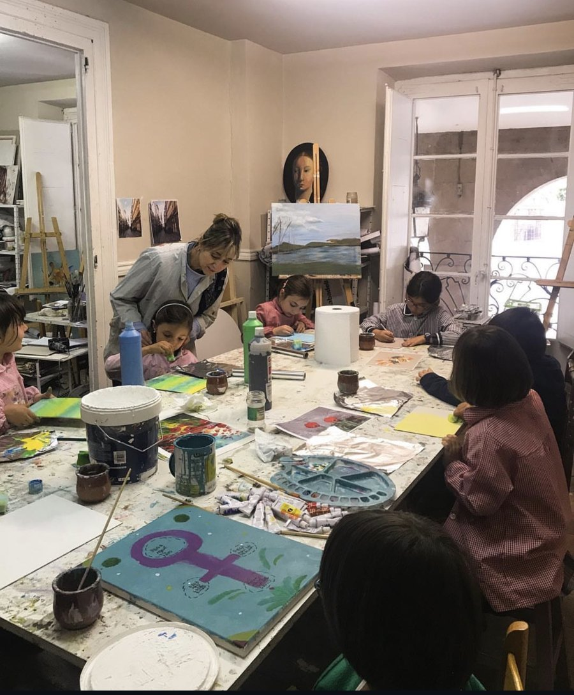
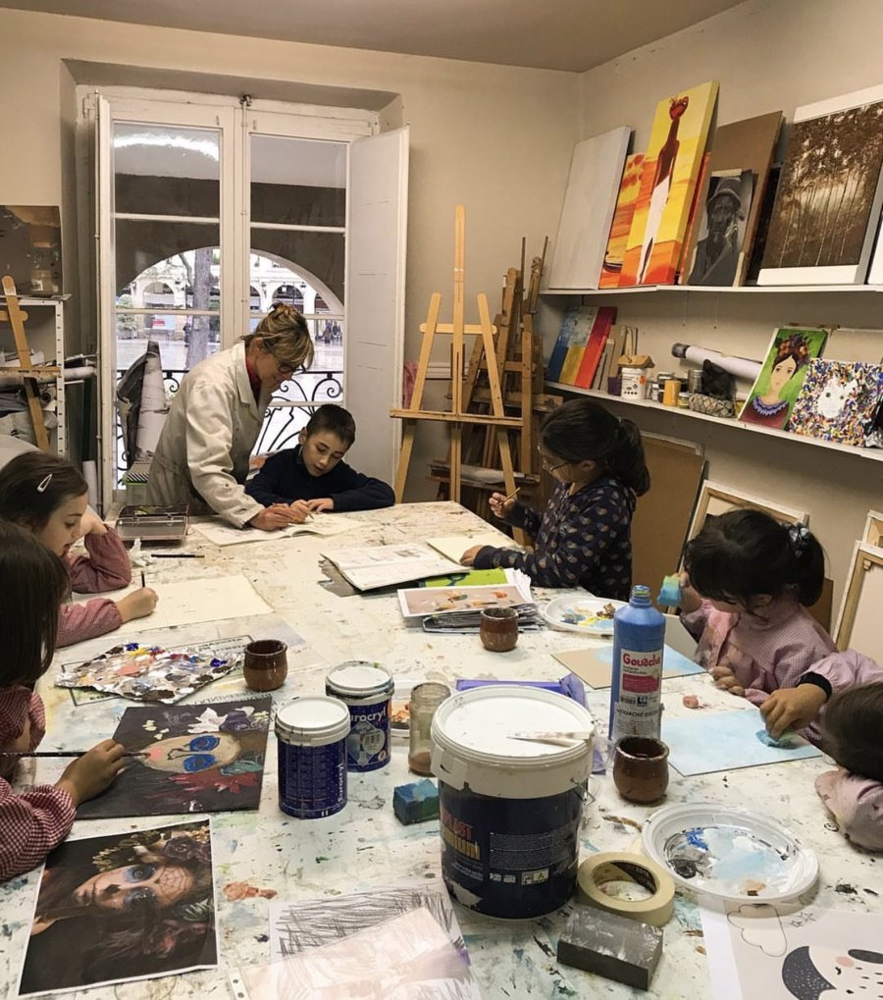
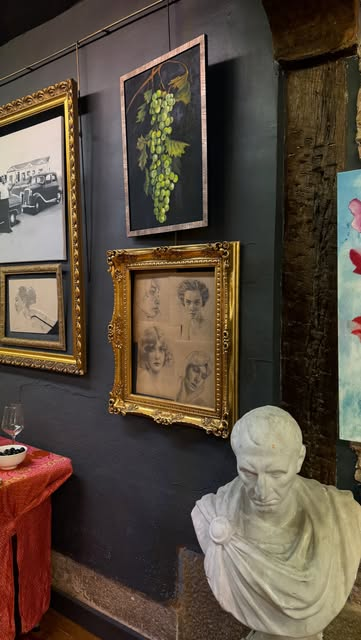

El taller
Un taller de puertas abiertas en el centro de Logroño
El espacio
- Cuatro salas
- Luz natural
- Centro de Logroño
- Zona de exposición
Sobre el taller
Un espacio amplio, luminoso y en pleno casco antiguo, pensado para pintar y dibujar con calma: salas con grandes ventanales a la plaza, mesas grandes, caballetes y un rincón donde mostrar la obra.

Las salas
Cuatro salas
El taller cuenta con cuatro salas amplias, con luz natural y en pleno centro de Logroño. Es donde se reparten los grupos de niños y de adultos.
Los grandes ventanales se abren a los soportales de la plaza, así que se pinta y se dibuja con buena luz y con el ambiente del casco antiguo de fondo.
El trabajo
Espacio para trabajar
Mesas grandes para trabajar con calma, caballetes para quien pinta de pie y estanterías donde se guardan los trabajos en curso.
Cada persona avanza a su ritmo, con el material a mano y con espacio para extender lo que está haciendo.


La exposición
Una zona de exposición
Un rincón del taller dedicado a mostrar obra: cuadros, dibujos y esculturas, y el lugar donde se montan las exposiciones de alumnas y alumnos.


El material
No necesitas comprar nada para empezar
En la primera clase te prestamos lo básico para que pruebes sin gastarte dinero. Si decides quedarte, te pasamos una lista corta de material según la técnica que vayas a trabajar y te ayudamos a comprarlo bien: en pintura, lo barato sale caro.
Los soportes grandes, los caballetes y los materiales de uso común (agua, trapos, tableros) están incluidos en la cuota.

Visítanos
Pásate y lo ves con tus ojos
Te enseñamos el espacio, te contamos cómo van los grupos y pruebas una clase.